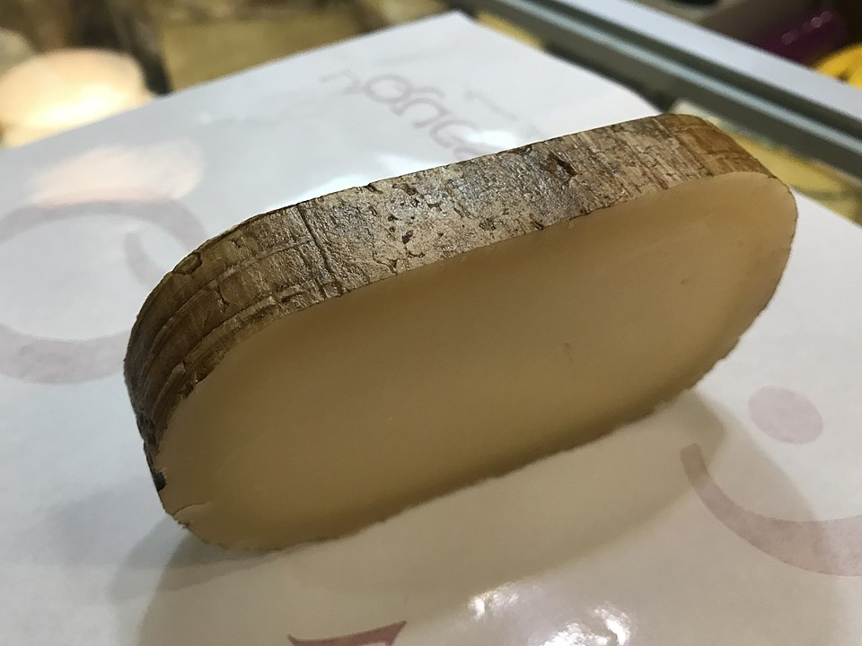

| Autor: Alejandro Rivera Casaseca Fecha:20/01/2021 |
Valladolid |
||||||||
| Inicio |
|
||||||||
| Burgos | |||||||||
| León | |||||||||
| Palencia | |||||||||
| Salamanca | |||||||||
| Segovia | |||||||||
| Soria | |||||||||
| Valladolid | |||||||||
| Zamora | |||||||||
| Pagina de contacto | |||||||||
LocalizaciónLocalidadesGrandes ciudades : Valladolid, Laguna de Duero, Medina del Campo, Arroyo de la Encomienda, La Cistérniga, Tordesillas, Tudela de Duero, Íscar, Zaratán, Aldeamayor de San Martín, Simancas, Cigales, Peñafiel, Medina de Rioseco, Santovenia de Pisuerga, Boecillo, Renedo de Esgueva, Cabezón de Pisuerga, Olmedo, Pedrajas de San Esteban, Mojados, Villanubla, Portillo, Viana de Cega, Nava del Rey, Fuensaldaña, Valdestillas, Villalón de Campos, Mayorga, Alaejos, Rueda, Villanueva de Duero, La Pedraja de Portillo, Serrada, Traspinedo, Campaspero, La Seca, Matapozuelos, Villabrágima y Quintanilla de Onésimo. Mas informaciónGeografíaLa ciudad de Valladolid se encuentra en la mitad norte de la península ibérica. Está situada en el centro de la Meseta Norte, división de la Meseta Central, por lo que presenta un paisaje típico, llano y con escasa vegetación. El relieve vallisoletano lo conforma una llanura interrumpida por pequeñas series de colinas que originan un paisaje montañoso de cerros testigos como el de San Cristóbal (843 m), a pocos kilómetros de la capital. Las coordenadas de la ciudad son 41º 38' N 4º 43' O. La altitud del centro de la ciudad es de 690 m s. n. m., mientras que la altitud máxima del municipio es de 863 m s. n. m., la cual se da al noreste del mismo, entre Páramo de Cabezón y Barco de San Pedro; y la altitud mínima es de 671 m s. n. m., la cual se da en el último tramo del río Duero dentro del municipio, a unos metros de su confluencia con el río Pisuerga. El término municipal cuenta con dos exclaves, uno al norte de Villanubla (Navabuena) y otro al oeste de Ciguñuela (El Rebollar). Volver al principioHistoriaLa historia de Valladolid se remonta a la Edad Media. Aunque existen indicios de asentamientos pertenecientes al Paleolítico inferior, Valladolid no tuvo una población estable hasta la Edad Media. Durante la repoblación de la Meseta, Alfonso VI encargó al conde Pedro Ansúrez su poblamiento, otorgándole el señorío de la misma en 1072. Desde esta fecha se inicia el crecimiento, de la población , dotándose de distintas instituciones; Iglesia Colegial, Universidad o Alcázar Real. Esto le permitió convertirse en sede de la corte castellana y posteriormente entre 1601 y 1606 capital del Imperio español hasta que la capitalidad pasó definitivamente a Madrid. A partir de entonces, se inicia un periodo de decadencia que solo se salvará con la llegada del ferrocarril, en el siglo XIX, y con la industrialización de la ciudad, ya en el siglo XX. Volver al principioCulturaEn Valladolid hay muchas actividades culturales para hacer, como visitar monumentos, iglesias, sus numerosos municipios, mencionados antes, etc. En el siguiente enlace, podrá encontrar todas las actividades culturales que podrá realizar en su visita a Valladolid. Actividades culturales de Valladolid Volver al principio NaturalezaEstos son los 10 mejores parajes naturales de la provincia de Valladolid: Parque Campo Grande, Canal de Castilla, El Valle de los Seis Sentidos, Entorno del Lago, Reserva Natural Riberas de Catronuño, Parque Zoológico La Era las Aves, La Acequia, Jardín Botánico de Arroyo de la Encomienda, Rio Duero Rutas y Sendas, Embalse de Encinas de Esgueva Si desea conocer más sobre estos parajes, o sobre otros que no se han mencionado, puede acceder a ellos a través de estos enlaces: Volver al principioTradicionesDesde 1957, con algunas interrupciones,12 se celebra el "Día de la Provincia", también conocida como "Día de los municipios". No es festivo pero sí se homenajea a los alcaldes de los 225 municipios vallisoletanos y al resto de políticos vallisoletanos y demás personas célebres nacidas en esta provincia. No tiene un día fijo en el calendario, pero suele celebrarse a finales de septiembre o inicios de octubre. Este es un vídeo de una de las fiestas de un municipio de Valladolid: Volver al principio OtrosGastronomíaAlgunos platos típicos de la gastronomía de Valladolid son el lechazo asado, el cochinillo asado o el queso de pata de mulo La siguiente imagen es un ejemplo de gastronomía de la provincia de Valladolid, es el queso de pata de mulo Volver al principio |